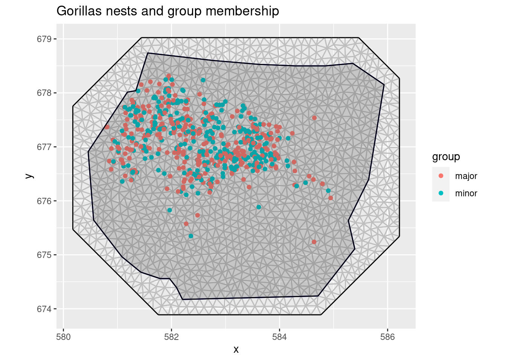
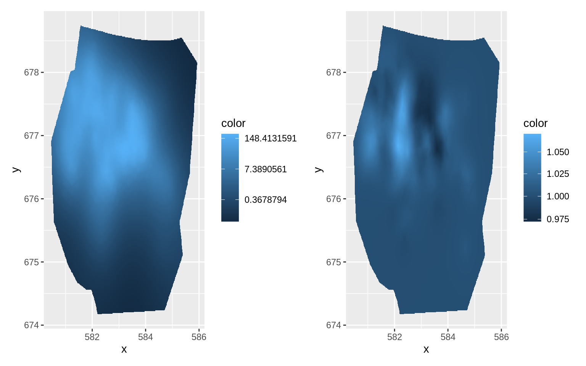
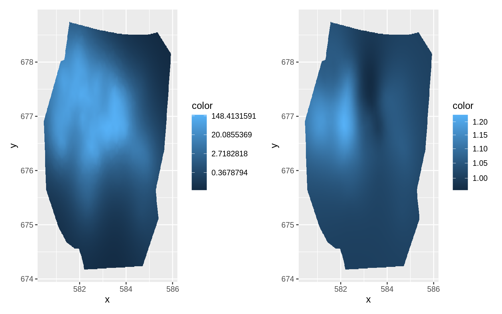

LGCPs - Multiple Likelihoods
Fabian E. Bachl
Generated on 2022-04-04
Source:vignettes/web/2d_lgcp_multilikelihood.Rmd
2d_lgcp_multilikelihood.RmdIntroduction
For this vignette we are going to be working with the inlabru’s ´gorillas´ dataset which was originally obtained from the R package spatstat. The data set contains two types of gorillas nests which are marked as either major or minor. We will set up a multi-likelihood model for these nests which creates two spatial LGCPs that share a common intercept but have employ different spatial smoothers.
Get the data
For the next few practicals we are going to be working with a dataset obtained from the R package spatstat, which contains the locations of 647 gorilla nests. We load the dataset like this:
data(gorillas, package = "inlabru")Plot the nests and visualize the group membership (major/minor) by color:
ggplot() +
gg(gorillas$mesh) +
gg(gorillas$nests, aes(color = group)) +
gg(gorillas$boundary) +
coord_fixed() +
ggtitle("Gorillas nests and group membership")
Fiting the model
First, we define all components that enter the joint model. That is, the intercept that is common to both LGCPs and the two different spatial smoothers, one for each nest group.
matern <- inla.spde2.pcmatern(gorillas$mesh,
prior.range = c(0.1, 0.01),
prior.sigma = c(1, 0.01)
)
cmp <- ~
Common(coordinates, model = matern) +
Difference(coordinates, model = matern) +
Intercept(1)Given these components we define the linear predictor for each of the likelihoods. (Using “.” indicates a pure additive model, and one can use include/exclude options for like() to indicate which components are actively involved in each model.)
fml.major <- coordinates ~ Intercept + Common + Difference / 2
fml.minor <- coordinates ~ Intercept + Common - Difference / 2Setting up the cox process integration points is easy in this example. Both nest types were observed within the same window.
ips <- ipoints(gorillas$boundary, gorillas$mesh)Lastly, we define the two likelihoods…
lik_minor <- like("cp",
formula = fml.major,
data = gorillas$nests[gorillas$nests$group == "major", ],
ips = ips
)
lik_major <- like("cp",
formula = fml.minor,
data = gorillas$nests[gorillas$nests$group == "minor", ],
ips = ips
)… which we provide to the ´bru´ function.
jfit <- bru(cmp, lik_major, lik_minor,
options = list(
control.inla = list(int.strategy = "eb"),
bru_max_iter = 1
)
)
library(patchwork)
pl.major <- ggplot() +
gg(gorillas$mesh,
mask = gorillas$boundary,
col = exp(jfit$summary.random$Common$mean)
)
pl.minor <- ggplot() +
gg(gorillas$mesh,
mask = gorillas$boundary,
col = exp(jfit$summary.random$Difference$mean)
)
(pl.major + scale_fill_continuous(trans = "log")) +
(pl.minor + scale_fill_continuous(trans = "log")) &
theme(legend.position = "right")
jfit0 <- jfit
jfit <- bru_rerun(jfit)
library(patchwork)
pl.major <- ggplot() +
gg(gorillas$mesh,
mask = gorillas$boundary,
col = exp(jfit$summary.random$Common$mean)
)
pl.minor <- ggplot() +
gg(gorillas$mesh,
mask = gorillas$boundary,
col = exp(jfit$summary.random$Difference$mean)
)
(pl.major + scale_fill_continuous(trans = "log")) +
(pl.minor + scale_fill_continuous(trans = "log")) &
theme(legend.position = "right")
summary(jfit0)
#> inlabru version: 2.5.2.9000
#> INLA version: 22.03.28
#> Components:
#> Common: Model types main='spde', group='exchangeable', replicate='iid'
#> Difference: Model types main='spde', group='exchangeable', replicate='iid'
#> Intercept: Model types main='linear', group='exchangeable', replicate='iid'
#> Likelihoods:
#> Family: 'cp'
#> Data class: 'SpatialPointsDataFrame'
#> Predictor: coordinates ~ Intercept + Common - Difference/2
#> Family: 'cp'
#> Data class: 'SpatialPointsDataFrame'
#> Predictor: coordinates ~ Intercept + Common + Difference/2
#> Time used:
#> Pre = 1.29, Running = 1108, Post = 0.363, Total = 1109
#> Fixed effects:
#> mean sd 0.025quant 0.5quant 0.975quant mode kld
#> Intercept -0.303 1.367 -2.983 -0.301 2.377 NA 0.046
#>
#> Random effects:
#> Name Model
#> Common SPDE2 model
#> Difference SPDE2 model
#>
#> Model hyperparameters:
#> mean sd 0.025quant 0.5quant 0.975quant mode
#> Range for Common 2.957 0.573 2.031 2.889 4.272 NA
#> Stdev for Common 2.056 0.331 1.503 2.023 2.801 NA
#> Range for Difference 0.586 0.489 0.107 0.450 1.876 NA
#> Stdev for Difference 0.106 0.077 0.020 0.087 0.305 NA
#>
#> Deviance Information Criterion (DIC) ...............: 615.82
#> Deviance Information Criterion (DIC, saturated) ....: -32938.27
#> Effective number of parameters .....................: -765.65
#>
#> Watanabe-Akaike information criterion (WAIC) ...: 1643.85
#> Effective number of parameters .................: 103.03
#>
#> Marginal log-Likelihood: -1205.30
#> is computed
#> Posterior summaries for the linear predictor and the fitted values are computed
#> (Posterior marginals needs also 'control.compute=list(return.marginals.predictor=TRUE)')
summary(jfit)
#> inlabru version: 2.5.2.9000
#> INLA version: 22.03.28
#> Components:
#> Common: Model types main='spde', group='exchangeable', replicate='iid'
#> Difference: Model types main='spde', group='exchangeable', replicate='iid'
#> Intercept: Model types main='linear', group='exchangeable', replicate='iid'
#> Likelihoods:
#> Family: 'cp'
#> Data class: 'SpatialPointsDataFrame'
#> Predictor: coordinates ~ Intercept + Common - Difference/2
#> Family: 'cp'
#> Data class: 'SpatialPointsDataFrame'
#> Predictor: coordinates ~ Intercept + Common + Difference/2
#> Time used:
#> Pre = 1.05, Running = 302, Post = 0.117, Total = 303
#> Fixed effects:
#> mean sd 0.025quant 0.5quant 0.975quant mode kld
#> Intercept -0.359 1.413 -3.131 -0.357 2.412 NA 0.048
#>
#> Random effects:
#> Name Model
#> Common SPDE2 model
#> Difference SPDE2 model
#>
#> Model hyperparameters:
#> mean sd 0.025quant 0.5quant 0.975quant mode
#> Range for Common 2.936 0.570 2.007 2.872 4.235 NA
#> Stdev for Common 2.104 0.339 1.525 2.074 2.852 NA
#> Range for Difference 2.303 3.442 0.137 1.273 10.786 NA
#> Stdev for Difference 0.144 0.085 0.029 0.128 0.348 NA
#>
#> Deviance Information Criterion (DIC) ...............: 636.47
#> Deviance Information Criterion (DIC, saturated) ....: -32917.62
#> Effective number of parameters .....................: -750.13
#>
#> Watanabe-Akaike information criterion (WAIC) ...: 1658.39
#> Effective number of parameters .................: 110.52
#>
#> Marginal log-Likelihood: -1204.43
#> is computed
#> Posterior summaries for the linear predictor and the fitted values are computed
#> (Posterior marginals needs also 'control.compute=list(return.marginals.predictor=TRUE)')